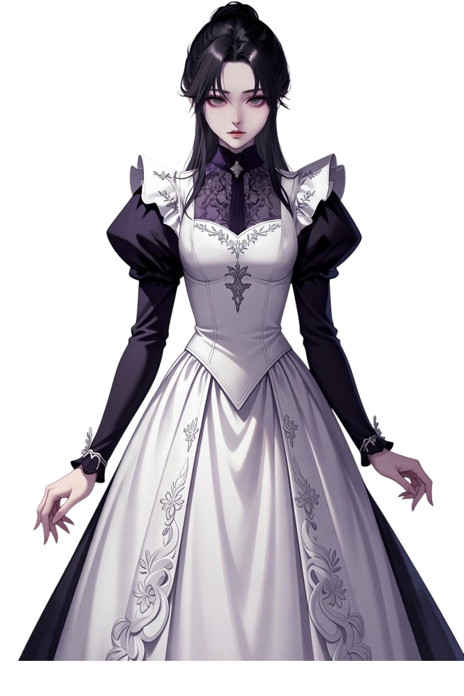
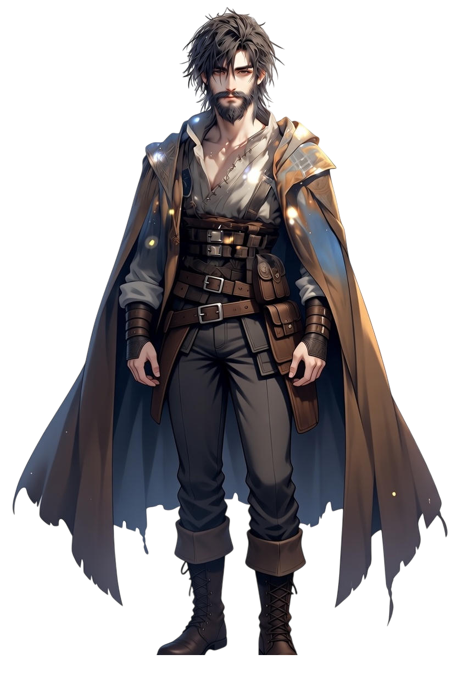
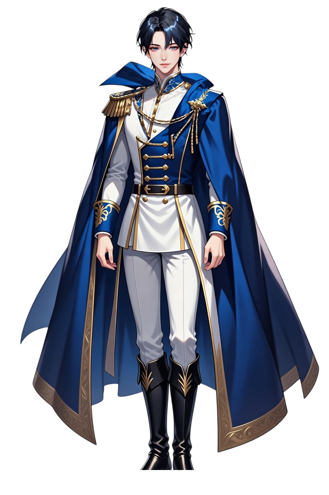

キャラクター一覧
イシャナ・エラシア
Ishana Erasia
イシャナ・エラシアは、
エラシア王国の若き女王であり、
複雑な血統と重い責任を背負って即位した人物である。
彼女は生まれながらの策士でも、
政治を楽しむ為政者でもない。
本来は率直で行動的な気質を持つが、
王という立場ゆえに、常に妥協と判断を強いられている。
人物像
・冷静に振る舞おうとするが、感情は隠しきれない
・理屈よりも直感を信じたい性格
・汚れた政治に対して強い嫌悪感を持つ
・それでも逃げず、責任を引き受けてしまう
周囲からは
「若すぎる女王」「象徴的存在」と見られることが多いが、
その内側では常に
自分の選択が何を壊すのかを考え続けている。

ラーベ・ラヴ・ラール
Raabe Luv Rahl
ラヴはエラシア貴族家系の出身で、
現在はイシャナ・エラシア付きの乳母として王宮に仕えている女性である。
忠誠心は非常に強いが、盲目的ではなく、
感情に流れがちなイシャナを現実へ引き戻す
抑制役・常識枠として機能する。
人物像
寡黙で自己主張をしない
観察力と記憶力が高く、実務に強い
感情を表に出さないが、内面は繊細
子ども（特にイシャナ）に対してのみ柔らかい態度を見せる
政治や神話よりも、
「今この場でイシャナが傷つかないか」を優先して考える人物。

カール・グラス
Karl Glass
カールはスラム出身のナイトであり、
幼少期のイシャナを救った過去を持つ人物である。
王宮や貴族社会とは距離のある立場にあり、
理想や血統よりも現実を基準に行動する。
人物像
軽口を叩き、場の空気を和らげる
権威や肩書を無条件に信用しない
判断は常に現場目線で行われる
英雄扱いを好まず、前に出ることを避ける
余計な犠牲を出さないことを最優先に考える人物。

リュール・ロン・フォール
Ryuhl Ron Faure
リュールはヴァステン帝国の皇太子であり、
知性と文書を武器に動く外交の担い手である。
感情ではなく論理を優先し、
王の背後で状況を整理し続ける立場にある。
人物像
非常に頭が切れ、記憶力が高い
皮肉屋で距離を取った話し方をする
自身が汚れ役になることを厭わない
感情的に寄り添うより、行為で支える
王が王であり続けるために動く人物。

マクス
キャラ3の説明文がここに入ります。
マクス
キャラ3の説明文がここに入ります。
マクス
キャラ3の説明文がここに入ります。